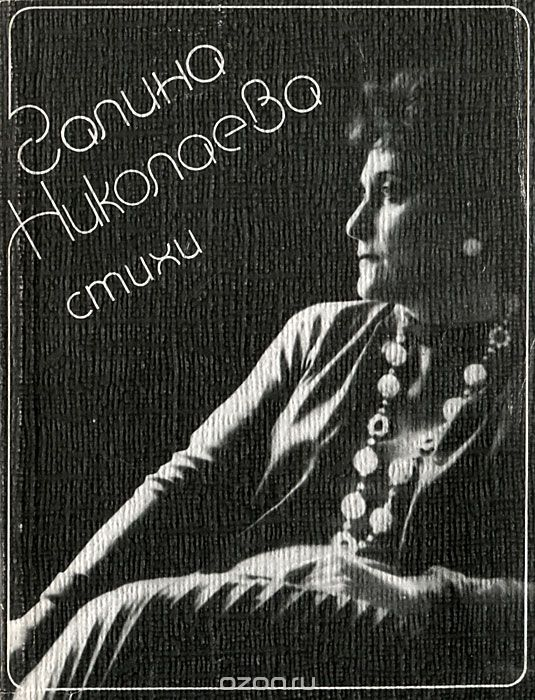
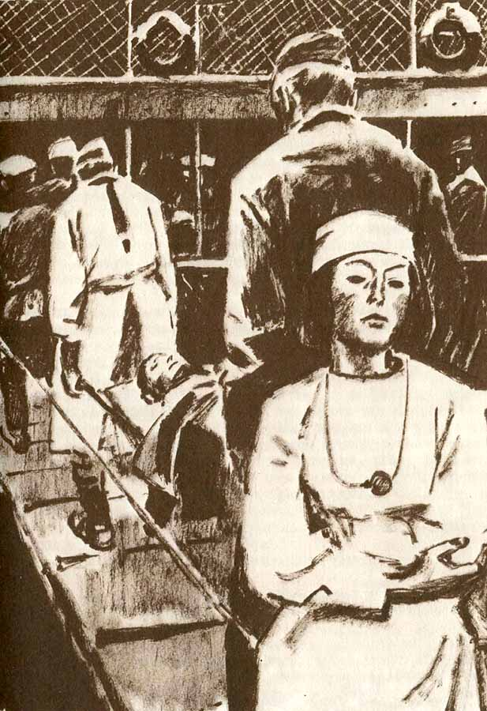

стихи, очерки, проза, главные произведения

Творческий путь Галины Евгеньевны начинается ещё в военные годы. В конце 1944 г. она посылает свои стихи поэту Н.С. Тихонову, творчество которого она особенно ценила и вкусу которого доверяла, приписав на конверте: «Поэту Н. Тихонову. Если он жив». 11 января 1945 г. он принес на заседание редколлегии журнала «Знамя» исписанную полудетским почерком синюю школьную тетрадь, присланную из Нальчика. Находившиеся в ней стихи: «Для вас, закрывших Родину телами», «Сталинградка», «Волга», «Завещание», «Эшелоны», «Ты не можешь погибнуть, пока я жива», «О любви и ненависти» и др. произвели большое впечатление на членов редколлегии. Сотрудница журнала Ц. Е. Дмитриева позднее вспоминала:
Высокую оценку присланным стихам никому неизвестной тогда поэтессы дали многие маститые писатели и поэты, среди которых был и К. М. Симонов, написавший в воспоминаниях:
"Если на небе игра зари, — Чудится — у воды Черная пристань вдали горит, В розовом свете дым. Дым над кормой. Продохнуть невмочь: Пламя в дверях кают, Рядом кричат, просят помочь, Пули фанеру шьют. Друг у меня на руках хрипит, Судорожно ворот рвет. Алая кровь на зарю летит, В небо из горла бьет. Мне на зарю не смотреть, не смотреть, Помню одно, одно — Дым на заре, дым на заре, Трупы идут на дно. Я не сильна, не боец, не герой, Но посмотрю назад: Встал за спиной сорок второй, Встал за спиной Сталинград."
Здесь смерть, как разлука, обычно, За делом почти не страшна, И всем нам известно отлично Короткое слово — война, — писала она тогда, в сорок пятом году»
Друг, прости этих строк торопливых тоску: Я иначе писать не могу. Это хриплым и трудным дыханьем войны Были песни мои рождены. Это радость и боль через край пролилась, И слова, не догнавшие мысль, Опустев, позабыты на смятом листке, Словно гильзы на взрытом песке.

В ноябре 1948 года писательница приступила к написанию своего первого крупного произведения, рассказывающего о жизни послевоенного села, в деревушке Уренского района Карповке. В своей статье «Как я работала над романом «Жатва» Г. Е. Николаева отмечала, что люди колхоза «Трактор» дали ей много для создания образа её главного героя, многие эпизоды списаны непосредственно с работы животноводов колхоза. Роман «Жатва» был издан в 1950 году.
Жатва — это выдающееся произведение советской прозы пятидесятых годов, он принадлежит к подлинным сокровищам эпохи социалистического реализма. Высоко оцененное современниками произведение, как водится — совершенно и незаслуженно забытое поколением нынешним — бесспорно являет собой один из лучших образцов «сельской», обращенной к советской деревне, прозы. Роман повествует о послевоенном восстановлении колхоза, о трудовом героизме советских людей и их нелегких судьбах. Главный герой романа – Василий Бортников возвращается в родное село холодной зимой 1947 года. Василий прошел всю войну и два года провел в госпитале, с трудом оправившись от тяжелого мозгового ранения. Только не радостной вышла долгожданная встреча. Любимая жена Авдотья, уже оплакавшая мужа, на которого пришла похоронка, вышла замуж за тракториста Степана, тоже бывшего фронтовика. В колхозе царит разруха: скот голодает, план постоянно проваливается. Партийная организация выдвигает Василия Бортникова на пост председателя. Василий с головой уходит в работу. Он налаживает дисциплину, добивается выдачи техники, убеждает колхозников в важности общего труда и даже находит способ выгодно реализовать сельхозпродукцию на городском рынке, чтобы пополнить колхозную казну. Благодаря его настойчивости, честности и организаторскому таланту, колхоз выходит из кризиса и становится лучшим в районе. В 1951 году за роман «Жатва» Галина Николаева была удостоена Сталинской премии первой степени. В 1952 году на экраны вышел фильм «Возвращение Василия Бортникова», снятый по мотивам романа на киностудиии «Мосфильм» режиссером В.И. Пудовкиным.
В 1954 г. была напечатана книга «Повесть о директоре МТС и главном агрономе», написанная под впечатлением от поездок на целину и в колхозы Краснодарского края. В этом же году писательница приступает к написанию главного произведения своей жизни — романа «Битва в пути».
Битва в пути — одно из лучших произведений русской советской литературы. Это масштабная производственная и психологическая драма, в которой писательница ставит и по-новому решает многие актуальные проблемы, но особая роль уделена таким вопросам, как мораль, любовь, семья, быт.
Действие романа разворачивается в 1953 году на крупном тракторном заводе, куда приезжает новый главный инженер Дмитрий Бахирев — бескомпромиссный и принципиальный специалист. Ему, ратующему за выпуск надежной и качественной продукции, приходится вступить в ожесточенную схватку с директором завода, который ради показухи и гонки за выполнением плана, готов скрывать брак и недочеты. В личной жизни главного героя тоже не все гладко. Его жена – холодная и эгоистичная женщина, которая не понимает его увлеченности работой. Инженер влюбляется в искреннюю и глубокую девушку – чертежницу Дашу, но не может оставить жену. В главном герое собственные чувства борются с моралью и долгом.
Наверх